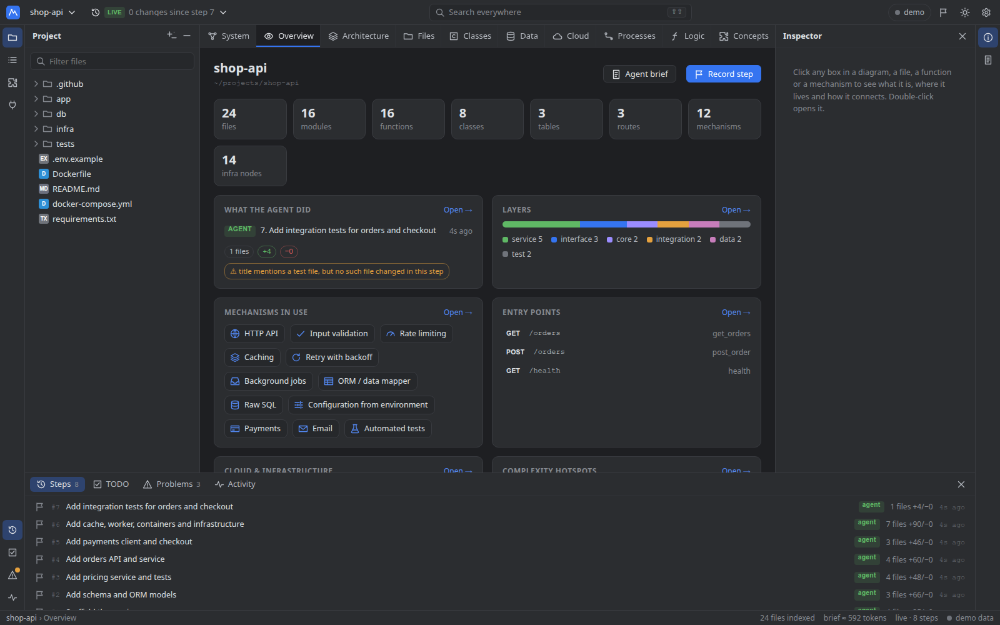
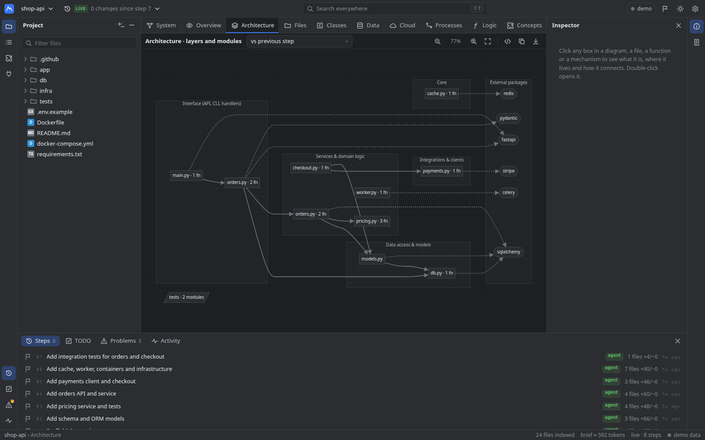
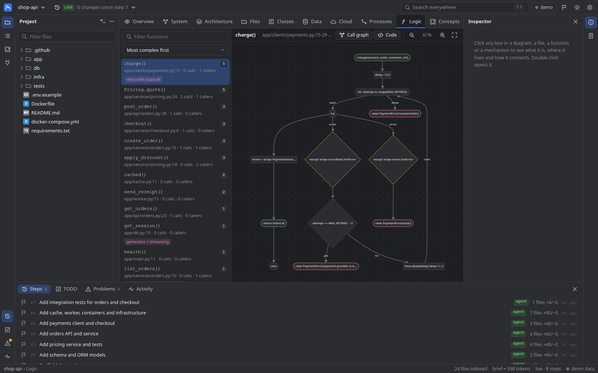
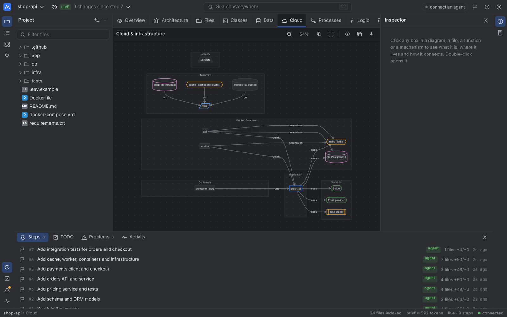
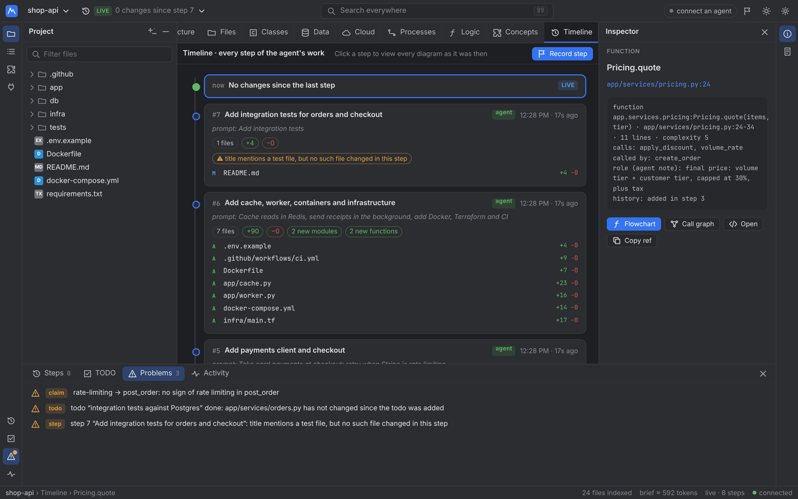

Mapwright draws the structure, architecture, data model, cloud, API flows and logic of your project from the code, live, as the agent writes it. The agent reads the same map in about 600 tokens instead of exploring files — and everything it claims is checked against the code.

An IDE-style interface in dark or light. Click any box to inspect it, double-click to open the code, the flowchart or the call graph. Pick any earlier step and every view shows the project as it was then, with what changed outlined.
What the agent just did, layers, mechanisms, entry points, infrastructure, hotspots, plan and verification on one page.
Modules grouped into layers — interface, services, data, integrations, UI — with imports and external packages.
How the project is organised, with added and changed files marked at every step.
Classes, attributes, methods, inheritance and the classes they use.
Tables, columns, keys and relations from SQL, SQLAlchemy, Django and Prisma — even SQL inside code strings.
Containers, databases, caches, queues, buckets, functions, CI and external APIs, from Docker, Compose, Terraform, Kubernetes and SDK imports.
Each route → handler → the functions it calls → the tables they touch.
Every function by complexity with algorithm hints, and a flowchart of its control flow — each box links to its line.
29 kinds — caching, retries, queues, auth, rate limiting, ORM, LLM calls … — with the evidence in the code.
Every step: what was asked, what changed with diffs, how the design changed, and what did not check out.




Agents burn tokens rediscovering structure and writing summaries nobody can verify. With Mapwright the agent sends a title and an id; diagrams, icons, layouts and flowcharts come from a component library and from the code itself.
It reads the map with map instead of listing folders, keeps its plan in todo, and calls step "Add refunds" after each change. With hooks, turn ends close steps by themselves.
Static analysis of every file the agent touches — Python, JS/TS, SQL, Prisma, Docker, Terraform, CI — cached by content hash, versioned at every step. Nothing in your project is executed.
You get interactive diagrams in the browser or your editor. The agent gets a compact text map and per-symbol answers: callers, callees, tables, history. No source code in either.
| Tool | The agent sends | It gets back |
|---|---|---|
map | nothing | the whole project — layers, modules and key symbols, routes, tables, infra, mechanisms, todos, recent steps — in about 600 tokens |
find · symbol | a name | where it is, who calls it, what it calls, which tables it touches, when it changed |
step | a short title | a receipt of what really changed: files, lines, new and changed functions, classes, tables |
todo · claim · note · link | text, an id from the catalog, a symbol | whether the code backs it up |
What changed in a step is computed from the files. Todos need evidence that changed. Claimed mechanisms must appear in the code of the symbol named. Titles are checked against the changes. Whatever does not check out lands in Problems — and in the agent's own map.
See it in the demoOne MCP server for every MCP-capable agent, hooks where the agent has them, an Agent Skill for agents that read skills, and plain file watching for everything else. mapwright connect --list shows what is installed.
Editors: a VS Code extension (also Cursor, Windsurf, VSCodium) opens the map beside your code and shows the current step in the status bar.
Validated with real Claude Code building a URL shortener from an empty folder over two turns: 23 todo calls, 9 steps, 8 claims and 3 map reads against 26 file edits — and a single file read. All 11 todos and all 8 claims verified against the code.
 Mapwright
Mapwright